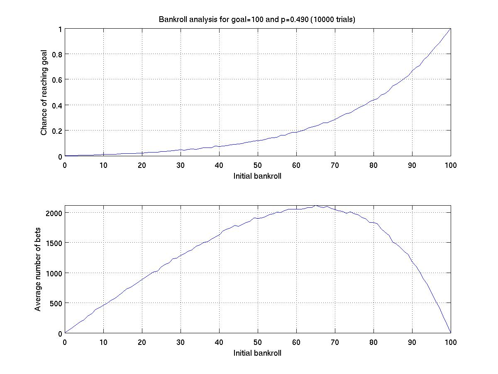
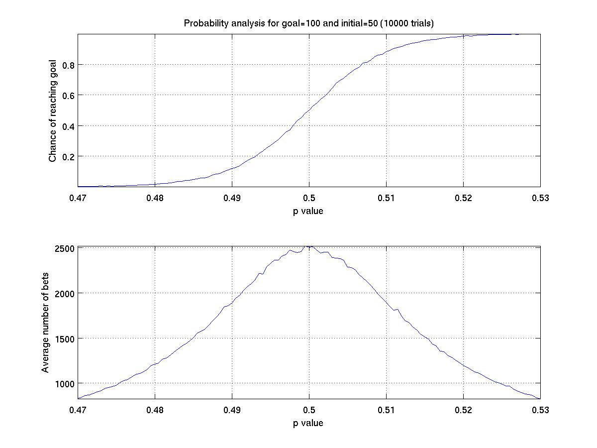

The Gambler
As a followup to the previous lecture, we
reexamine the gambler model.
Using the previous solution we would like
to take this a few steps further.
-
To produce graphs such as those given in the previous lecture
notes, comparing the chance of success and average number of
bets to the starting bankroll. Here is an example showing the
statistics for last classes challenge of goal=100, p=0.49.

-
To produce graphs that plot the success percentage and
average number of bets relative to the probability.

-
Although we already track the average number of steps for a
given trial, we wish to update our code in order to compile
statistics, for each possible bankroll value, of how many steps
begin with that bankroll.
-
To animate a single trial showing the current bankroll along the
way, as well as a summary of what percentage of time was spent
with each intermediate bankroll.
Originally by
Michael Goldwasser